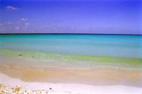

|
Mecredi 14 novembre
On n'est pas du genre raciste, on n'a rien contre les nord américains en tant
qu'individus. Mais la politique impérialiste de ce pays nous agace il est vrai
un peu parfois. Et cela ne va pas en s'arrangeant. Je suis en train de lire
un bouquin qui s'appelle ¨les veines ouvertes de l'Amérique du Sud¨ et qui raconte
la formidable exploitation de ce continent. Et l'époque contemporaine est marquée
par l'influence des Etats-Unis. Pas simplement l'influence culturelle et économique,
ça va beaucoup plus loin que ça... Le scénario a été chaque fois le même. Un
pays dirigé par un dictateur où une infime minorité se partage une richesse
venue de capitaux étrangers nord américain. Le peuple pendant ce temps crève
de faim. Un régime plus égalitaire essaie de se mettre en place en touchant
forcément aux privilèges des sociétés implantées. Ca ne plait pas au gouvernement
US qui organise un coup d'état et met en place un nouveau dictateur corrompu
à son business! Au mépris de la violence et de la misère engendrées. Les exemples
sont nombreux, Brésil, Chili, Guatemala, Bolivie... La liste est longue. Tant
de mal et de gens sacrifiés au dieu dollar...
Bref, c'est un peu avec cela en tête qu'on décide d'aller à la Isla Mujeres.
C'est bien parce que cette île un peu au large de Cancun baigne dans la mer
des Caraïbes qu'on décide d'y aller quand même. Histoire de voir l'eau turquoise.
On reprend la route, celle-là même qui nous avait amenés à Chichen Itza. Un
aller retour pour rien, mais on ne s'est décidé à aller aux Caraïbes que ce
matin. Même paysage, même monsieur au chapeau qui vend les tacos, bref, la route
nous semble un peu longue malgré nos provisions. Tomates, concombres et mayo,
le tout dans du pain vraiment pas mauvais. Manger, ça fait passer le temps...
Six heures et demi après, on arrive à Cancun. On prend un minibus. Le chauffeur
nous explique en pseudo anglais que ça coûte 5 pesos. On a beau lui répondre
quelques mots d'espagnol, ça ne change rien, il continue en anglais. Au passage,
il nous arnaque quelques pesos, le vrai prix n'était que de trois...
Puis, c'est le bateau. Il y a le rapide qui coûte 38 pesos et le lent qui ne
coûte que 18. Nous, on n'est pas pressé. De toute façon, il part "ahora", tout
de suite... ça veut dire dans 20 minutes. La fille qui vend les billets se "trompe"
et "oublie" de nous rendre toute la monnaie. Bien tenté... Ca continue, les
gens du bateau nous causent tous en angliche.
On arrive sur l'île 40 minutes plus tard, un gars nous propose son hôtel, en
anglais toujours. Malgré nos réponses en espagnol. D'autres veulent nous vendre
des sombreros, des coquilages, des vêtements. En anglais toujours. Ca agace
un peu, on n'a plus trop envie de répondre. On trouve un hôtel et on part ensuite
à la recherceh d'un club de plongée. On n'en trouve qu'un seul, assez gros,
très pro, un peu trop à notre goût. Tous les autres sont des sortes de succursales.
il y en d'autres, mais ils sont déjà fermés. Alors on décide d'attendre, on
plongera après-demain, le jour prévu de notre départ de l'île. Reste à régler
le problè des sacs à dos et de la douche puisqu'après-demain, on n'a la chambre
que jusqu'à midi. On voit le jeune homme à l'accueil qui voit avec la señora.
Mais si on veut garder la chambre une ou deux heures de plus, il faudra sans
doute payer... Payer, toujours payer. On a un peu l'impression de n'être aux
yeux de certain qu'un porte-feuille sur pattes. Première impression un peu décevante
de cette île dans les Caraïbes...
Jeudi 15 novembre
Il fait bon. Il fait beau et la mer est là, tout près. Ca va mieux. On trouve
un club de plongée qu'on sent un peu mieux que l'autre. Et puis on file à la
plage. Le début est envahi par les loueurs de chaises-relax et de parasols.
Un peu plus loin, ce sont les algues sèches qui gâchent un peu le paysage. Normal,
on est hors saison. Et puis de temps en temps, on est envahi par les relents
d'égoûts. Agréable comme tout! Mais on trouve un coin sous les cocotiers. Le
sable est fin, blanc et chaud mais pas trop. Et puis la mer, bleue turquoise,
transparente est juste à la bonne température. Un vrai régal. On y passe toute
la journée.
Le soir, on achète une bière et on la déguste en observant la vie du village
sur la place où les gens du village se promènent ou passent en sortant du supermarché.
Peu de touristes, finalement, qui tous sont dans la rue piétonne, dans les bars,
les restaurants ou les boutiques de souvenirs. Et puis, la Isla de las Mujeres,
c'est aussi l'occasion de déguster de succulents poissons dont on ne retiendra
pas les noms. Marion gardera sasn doute un excellent souvenir du poisson au
beurre servi dans un des petits restos du marché.
Vendredi 16 novembre
On se lève tôt, on prend le petit déj et puis le bateau. En arrivant sur le
lieu de la plongée, on voit deux énormes dauphins qui jouent dans les vagues,
il font bien 2 ou 3 mètres! Avec le courant et les grosses vagues, ils ne restent
pas nager avec nous. Dommage.
Première plongée pour aller voir le C58, un canonier américain coulé par 25
mètres de fond il y a quelques années à peine. Quelques gros poissons dont un
banc de baracudas! Mais c'est surtout amusant et impressionnant de nager au
milieu de ce bateau, de l'explorer. Il est en super état encore. Marion y a
même vu les WC à l'intérieur!
Deuxième plongée plus proche de la plage, à 15 mètres de profondeur. Le récif,
les coraux géniaux, les poissons colorés... Peut-être pas notre plus belle plongé
qui reste celles de Madagascar, d'Indonésie ou de Jordanie, mais quand même,
vraiment chouette...
A 17H00, après un peu de plage, on reprend le bateau pour Cancun. Pique-nique
au milieu des gens qui attendent le bus dans le hall du terminal. Jambon, fromage
et une bière. Je sais, on en boit beaucoup ici... Avec tout de même quelques
tomates et des concombres pour équilibrer le tout. A 20H30, le bus part, direction
Palenque.
Un bus première classe comme ils s'appellent ici. Cela veut dire qu'il roule
plus vite, qu'il est plus confortable, il a même la clim. On le savait, mais
j'ai oublié de prendre mon pull. Trop tard, mon sac est dans la soute. Je me
retrouve donc en short et T-shirt et... ça caille. Il y a un thermomètre sur
le tableau de bord du bus et il est descendu à... 17 degrés! Mais ça, c'est
à l'avant, de notre place, on est en plein au milieu d'un courant d'air glacial.
Tout le monde se gèle même avec leur blouson, alors moi avec mon T-shirt...
Marion essaie de me réchauffer et de se réchauffer en même temps car même avec
son pull, ce n'est pas suffisant. Un nuit horrible entrecoupée sans arrêt par
le froid qui nous réveille! Ils ont la clim et ils semblent en être vraiment
fiers. Même si tous leurs passagers doivent se geler. En plus, elle n'est pas
vraiment utile, il fait nuit, il pleut et l'air dehors est limite frisquet!
Suite du voyage : Palenque
|

Mexique
Isla Mujeres
|
Mexique
Isla Mujeres
|
Mexique
Isla Mujeres
|
|
|